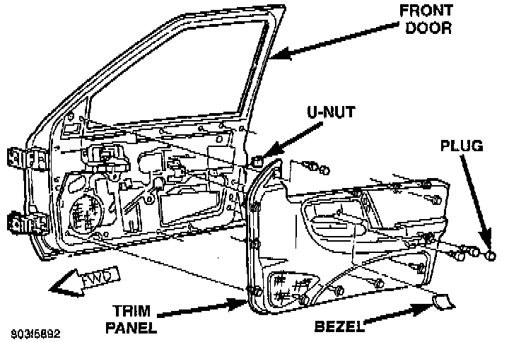

Front Door Panel: Service and Repair
Front Door Trim Panel:

REMOVAL
1. Remove screw attaching trim panel to inside release handle.
2. Remove screw at armrest.
3. Remove screw at the upper mirror bezel.
4. Using trim remover (C-4829 or equivalent), detach trim panel perimeter push-in fasteners from door inner panel.
5. If equipped, disconnect the wiring connectors from power switch panel.
6. Lift trim panel over inside release handle and remove trim panel from door.
INSTALLATION
1. If equipped, connect the wiring connectors to power switch panel.
2. Position trim panel on door inner panel.
3. Press push-in fasteners inward around perimeter of door to attach it to inner panel.
4. Install armrest screw.
5. Install mirror bezel screw.
6. Install screw attaching trim panel to inside release handle.